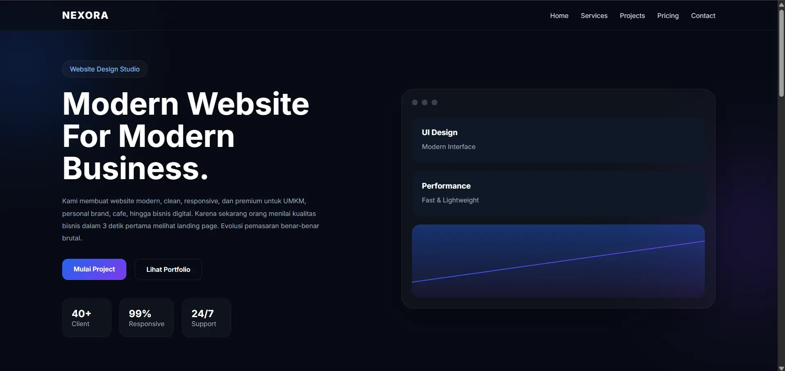
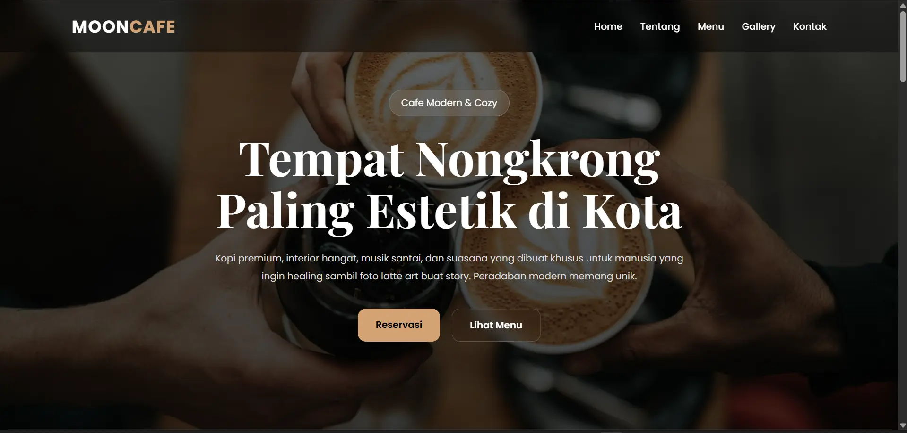

FUTURISTIC STYLE
Futuristic Portfolio
Cocok untuk bisnis modern, creative brand, personal portfolio, dan showcase digital premium.
Live PreviewMembantu bisnis tampil lebih profesional melalui website yang responsive, cepat, modern, dan SEO friendly. Cocok untuk UMKM, cafe, personal branding, hingga bisnis lokal.


Setiap website dirancang agar cepat, responsive, nyaman dilihat di mobile, dan memiliki struktur SEO friendly untuk membantu bisnis lebih mudah ditemukan di internet.
Website membantu bisnis terlihat lebih profesional, meningkatkan kepercayaan pelanggan, dan mempermudah calon customer menemukan bisnis melalui Google.
Berbeda dengan sosial media, website memberikan kontrol penuh terhadap tampilan, informasi bisnis, identitas brand, dan strategi digital jangka panjang.
MARTRA PORTAL menyediakan jasa pembuatan website modern untuk UMKM, cafe, bisnis lokal, personal branding, dan showcase digital dengan desain responsive, cepat, dan SEO friendly.
Beberapa contoh desain website untuk cafe, UMKM, personal branding, bisnis lokal, dan showcase digital modern.
Cocok untuk bisnis modern, creative brand, personal portfolio, dan showcase digital premium.
Live PreviewNuansa hangat dan estetik untuk cafe modern, coffee shop, dan bisnis lifestyle.
Live PreviewTampilan nyaman di desktop maupun mobile.
Struktur website dibuat lebih mudah dibaca Google.
Website ringan dan cepat dibuka.
Tampilan clean modern agar bisnis terlihat lebih profesional.
Ya. Semua website dibuat responsive dan nyaman digunakan di mobile maupun desktop.
Website dibuat dengan struktur SEO friendly agar membantu bisnis lebih mudah ditemukan di Google.
Cocok untuk UMKM, cafe, personal branding, bisnis lokal, hingga showcase digital modern.
Diskusikan kebutuhan website untuk UMKM, cafe, personal branding, maupun bisnis lokal modern.
Hubungi WhatsApp